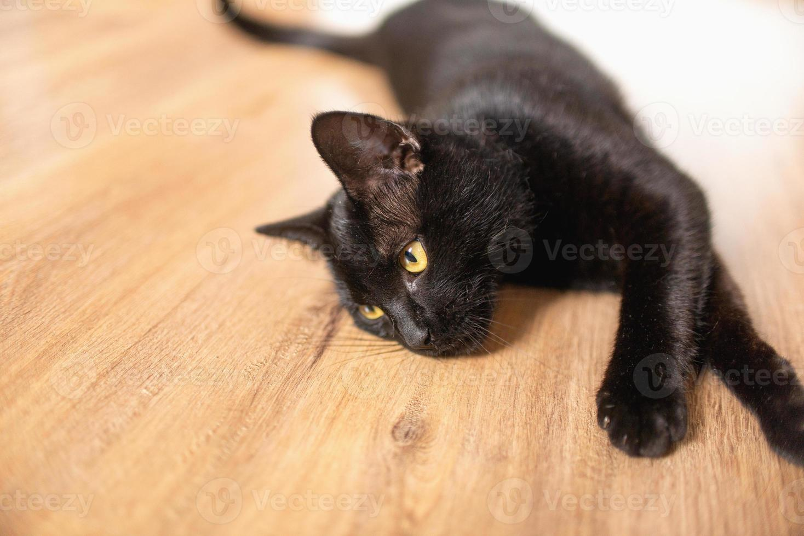
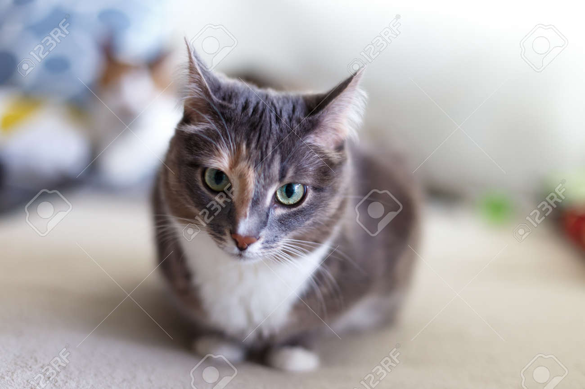

Chimu
En un rincón acogedor de la casa, vive un gato negro que es una auténtica mezcla de curiosidad, mimosidad y, bueno, hambre constante. Desde la punta de su reluciente nariz hasta la puntita de su esponjosa cola, este felino es un alborotador nato. Con sus brillantes ojos amarillos que parecen estar planeando la próxima invasión lunar, no se le escapa ningún rincón sin explorar, ni ningún objeto sin derribar. Este minino curioso tiene un espíritu aventurero y nunca desperdicia la oportunidad de husmear en cada caja, bolso o armario que se le cruza. Es como si estuviera buscando secretos del universo en el interior de una bolsa de papel arrugada. Y si alguna vez encuentras tus llaves desaparecidas, no te preocupes, probablemente las haya "guardado" bajo el sofá. Pero no te equivoques, detrás de esos ojos juguetones y esa obsesión por explorar, hay un pequeño travieso que solo tiene una cosa en mente: la comida. Cada vez que el reloj marca la hora de la comida (o cualquier hora, según él), este gato negro se convierte en un ser mimoso y cariñoso que no duda en ronronear y frotarse contra tus piernas con la esperanza de que caiga un trozo extra de salmón o un bocado de pollo. Así que, en resumen, este gato negro es una combinación encantadora de curiosidad insaciable y una devoción inquebrantable por la comida. Su carácter único y su obsesión por llenar su estómago te harán sonreír, incluso cuando te despierte a las 4 de la mañana para recordarte que es hora de su desayuno. Es un pequeño cómico peludo que ha convertido tu casa en su propio circo personal, y no cambiarías eso por nada en el mundo.
Indra
En el centro del hogar, reina con gracia y elegancia una gata tricolor. Su pelaje es una mezcla de blanco, negro y naranja que la hace parecer una verdadera obra de arte en movimiento. Pero no te dejes engañar por su apariencia encantadora; esta gata tiene una personalidad que puede derretir incluso el corazón más frío. Desde el momento en que entra en una habitación, esta felina tricolor se convierte en la reina indiscutible de la casa. Pasea con una elegancia inigualable, como si estuviera en una pasarela de moda, y observa a todos con una mirada que parece decir: "Soy la jefa y todos lo saben". Incluso los otros animales de la casa la respetan y le rinden tributo. Aunque pueda parecer una monarca distante, esta gata tricolor es, en realidad, la más cariñosa y afectuosa de todas las criaturas. No puede evitar acurrucarse en tu regazo en los momentos más inoportunos, como cuando estás tratando de trabajar o mirar tu programa de televisión favorito. No hay mejor terapia contra el estrés que su suave ronroneo y sus patitas que amasan con ternura. Pero su verdadera pasión es ser el centro de atención. Se acomoda en el lugar más visible de la casa y espera pacientemente a que la adores como se merece. Si alguna vez te olvidas de acariciarla, no te preocupes, te lo recordará con un suave toque de pata en la mano. Es la reina, después de todo, y merece ser tratada como tal. Así que, en resumen, esta gata tricolor es la reina absoluta de la casa, con una mezcla única de elegancia, cariño y dominación. Ella sabe que el mundo es su reino, y tú, su leal súbdito, no puedes evitar rendirte ante su encanto felino. Es la realeza peluda que ha convertido tu hogar en un verdadero palacio de amor y afecto, y no cambiarías eso por nada en el mundo.